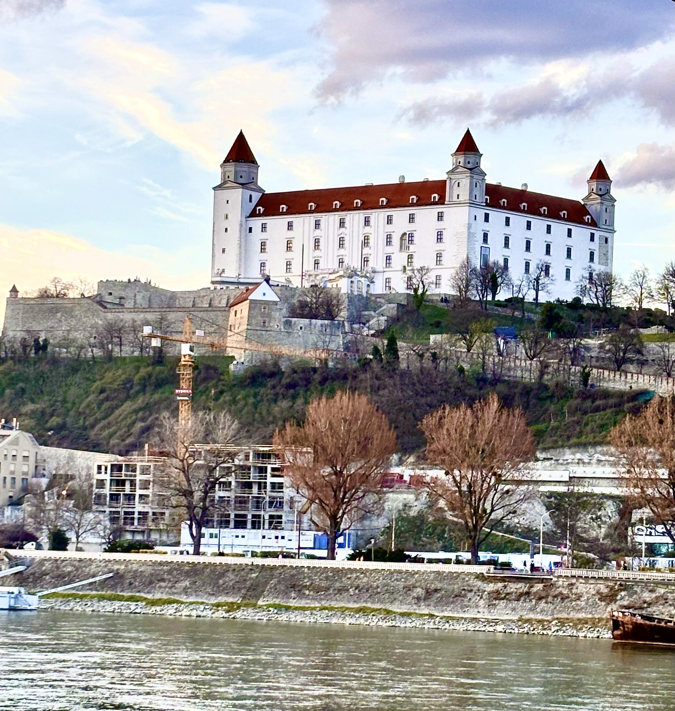
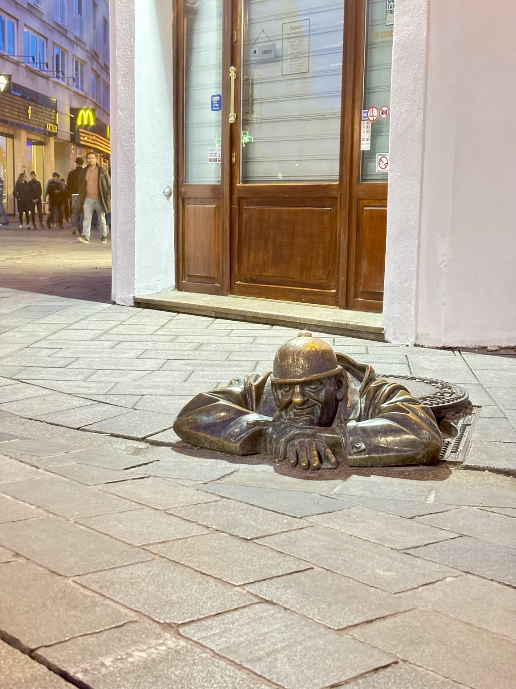
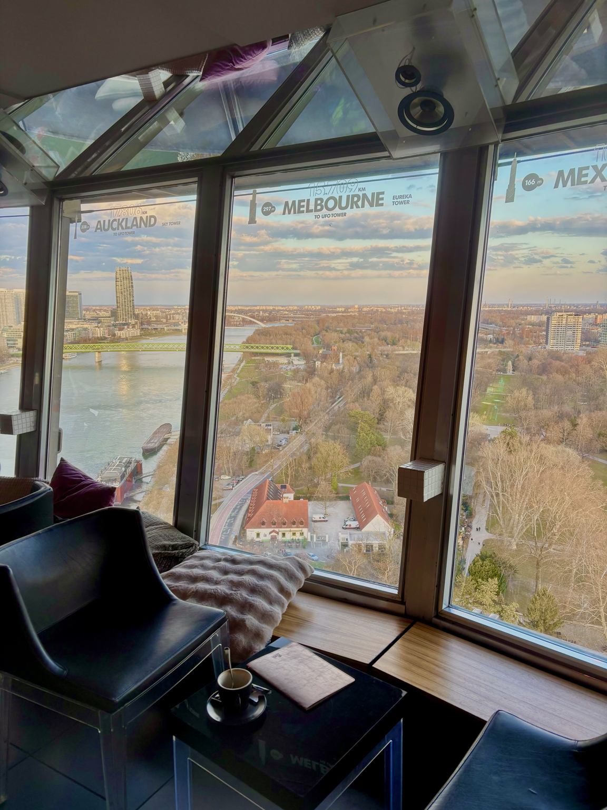

Due città in un solo viaggio
Vienna e Bratislava sono abbastanza vicine da poter essere facilmente abbinate nello stesso viaggio. Noi lo abbiamo fatto in pochi giorni, spostandoci tra le due capitali anche via Danubio. Qui trovi il nostro itinerario reale, comprese le cose che rifaremmo e quelle che organizzeremmo diversamente.
Bratislava → Vienna
Il nostro viaggio è iniziato in un modo un po' particolare: siamo atterrati a Bratislava intorno a mezzanotte, ma la prima tappa del viaggio era Vienna.
Avevamo quindi prenotato in anticipo un taxi che ci aspettava direttamente all'aeroporto. Dopo circa un'ora di strada siamo arrivati a Vienna e siamo andati direttamente al B&B a dormire.
Vienna
Dopo la notte siamo partiti alla scoperta di Vienna. Con la metro abbiamo raggiunto il centro e siamo arrivati nella zona della Cattedrale di Santo Stefano.

Da lì abbiamo continuato a piedi, girando il centro senza seguire un percorso troppo rigido. Vienna è una di quelle città in cui buona parte della visita consiste semplicemente nel camminare tra palazzi, piazze e strade del centro.
Una pausa per assaggiare la torta
Durante il giro ci siamo fermati al Café Fleuri per provare una delle classiche torte viennesi al cioccolato con confettura.
Per noi non è stata una delle cose più buone mangiate durante il viaggio, ma è comunque una di quelle esperienze che almeno una volta vale la pena provare quando si visita Vienna.
Schönbrunn e i giardini
Abbiamo poi raggiunto Schönbrunn, il palazzo legato alla figura dell'imperatrice Sissi.
Noi abbiamo scelto di non visitare gli interni e ci siamo concentrati sui giardini. È stata una pausa molto piacevole: una passeggiata tranquilla, lontana per un po' dal ritmo del centro città.

Belvedere e Klimt
Una delle visite che avevamo invece programmato in anticipo era il Belvedere. Avevamo acquistato il biglietto prima del viaggio tramite GetYourGuide soprattutto per vedere la collezione di Klimt.

Dopo la visita siamo tornati verso il centro con i mezzi pubblici e abbiamo proseguito verso l'ultima tappa della giornata.
Prater
Nel tardo pomeriggio siamo arrivati al Prater. Qui abbiamo fatto un giro sulla storica ruota panoramica, quella con i grandi vagoni rossi.

Dall'alto la vista su Vienna è davvero bella e, tra tutte le attrazioni del parco, questa è quella che volevamo assolutamente provare.
Abbiamo poi deciso di cenare direttamente nella zona del Prater. Qui abbiamo assaggiato la Wiener Schnitzel.
È essenzialmente una cotoletta impanata e fritta. La versione tradizionale può essere accompagnata anche da contorni e confettura di mirtilli rossi; quella che abbiamo mangiato noi era invece servita semplicemente con insalata. Non è stata una delle nostre esperienze gastronomiche preferite, ma volevamo comunque provarla almeno una volta.
Da Vienna a Bratislava sul Danubio
La mattina seguente abbiamo lasciato Vienna e raggiunto l'imbarco del battello che avevamo prenotato in anticipo.
Invece di prendere un normale treno o autobus, abbiamo scelto di trasformare anche lo spostamento in una parte del viaggio: Vienna e Bratislava sono infatti collegate via Danubio.
L'arrivo dal fiume è stato anche il nostro primo vero incontro con Bratislava.

Bratislava
Dal punto in cui ci ha lasciati il battello ci siamo diretti a piedi verso il nostro B&B. Prima, però, ci siamo fermati per pranzo.
Una delle soste che ricordiamo più volentieri del viaggio. Ci siamo fermati qui appena arrivati a Bratislava e gli hamburger ci sono piaciuti molto.
Dopo pranzo abbiamo raggiunto il B&B, lasciato le nostre cose e siamo usciti nuovamente per visitare la città.
La città vecchia
Abbiamo iniziato dal centro storico, girandolo soprattutto a piedi. Bratislava è molto più raccolta di Vienna e il centro si presta bene a essere esplorato senza un itinerario troppo rigido.
Una delle caratteristiche più divertenti sono le statue sparse per le vie del centro. La più famosa è sicuramente Čumil, l'uomo che spunta da un tombino.

UFO Tower
Dal centro ci siamo poi diretti verso uno dei simboli più riconoscibili della città: l'UFO Tower, sopra il ponte sul Danubio.
Siamo saliti fino in cima e la vista è stata una delle cose che ci sono piaciute di più a Bratislava.

Dopo essere scesi siamo tornati nel centro storico e abbiamo continuato a passeggiare tra le vie della città fino a cena.
Una cena slovacca
Per cena volevamo provare qualcosa di tipico e siamo andati al Bratislava Flagship, un locale molto particolare ricavato negli spazi di un vecchio teatro.
Quando siamo arrivati c'era un po' di fila, ma scorreva velocemente e sono riusciti a trovarci posto senza problemi. Per noi è stata una delle migliori esperienze gastronomiche del viaggio: il cibo ci è piaciuto tantissimo.
Dopo cena siamo rientrati al B&B e abbiamo concluso così la nostra giornata a Bratislava.
Bratislava con calma
Il nostro volo era nel tardo pomeriggio, quindi non abbiamo riempito l'ultima giornata di visite.
Dopo aver lasciato il B&B abbiamo semplicemente continuato a girare per Bratislava con calma, tornando nella città vecchia e passando un po' di tempo seduti lungo il corso principale.
È stato un ultimo giorno volutamente lento, senza dover correre da un'attrazione all'altra.
Quando è arrivato il momento di partire abbiamo preso l'autobus che collega direttamente la città con l'aeroporto e siamo rientrati.
Lo rifaremmo?
Sì, soprattutto per la combinazione delle due città. Vienna e Bratislava sono molto diverse tra loro e proprio per questo funzionano bene nello stesso viaggio.
Vienna richiede più tempo e ha molte più attrazioni da scegliere, mentre Bratislava è più piccola e permette di rallentare. Collegarle con il battello sul Danubio rende inoltre lo spostamento parte dell'esperienza.
Se dovessimo cambiare qualcosa, organizzeremmo meglio l'arrivo direttamente su Vienna o confronteremmo con attenzione il costo del trasferimento da Bratislava. Per il resto, manterremmo volentieri lo stesso ritmo.